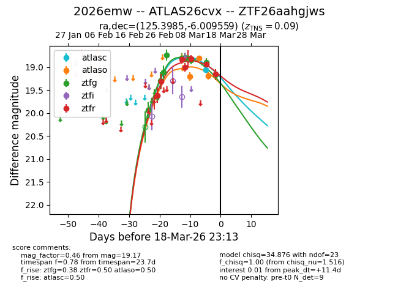
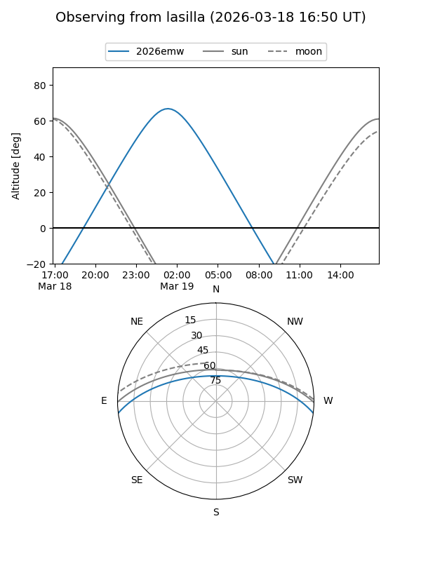
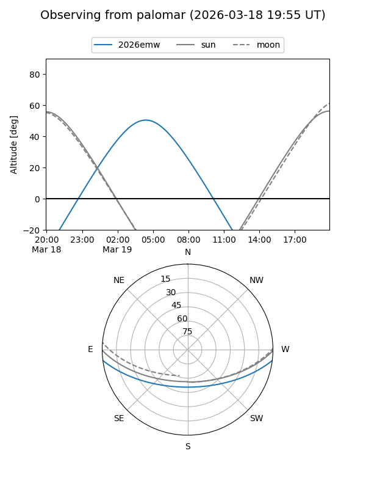
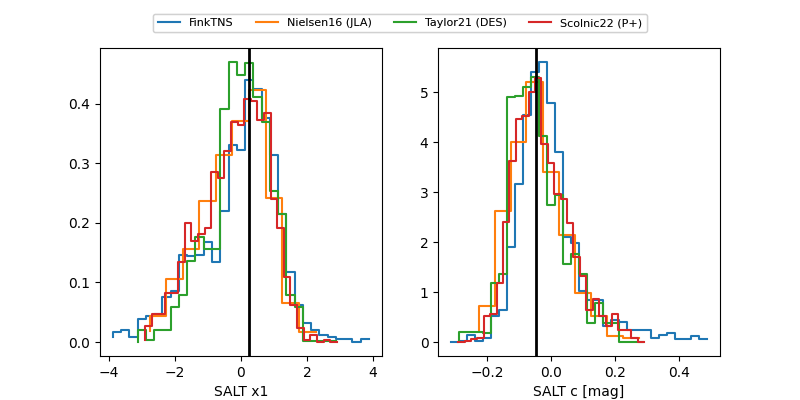

2026emw
Target 2026emw at 2026-03-18 23:14
Aliases and brokers:
FINK: link
Lasair: link
ALeRCE: link
TNS: link
YSE: link
alt names
ZTF26aahgjws (ztf,fink_ztf)
2026emw (tns,yse)
ATLAS26cvx (atlas)
Coordinates:
equatorial (ra, dec) = 125.3985,-6.00956
equatorial (HMS+DMS) = 08:21:35.63,-06:00:34.41
galactic (l, b) = (229.1399,+16.94953)
Flags:
confirmed ia
Photometry:
last atlasc=19.05, atlaso=19.20, ztfg=19.17, ztfr=19.16
1 atlasc, 3 atlaso, 9 ztfg, 7 ztfr detections
Lightcurve

Visibility


Additional plots
